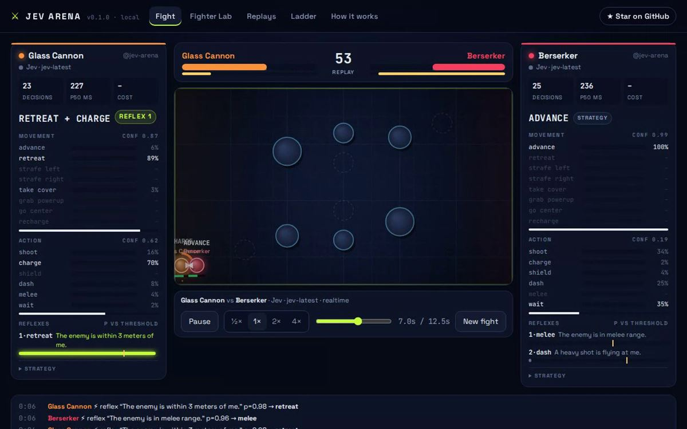

- 230 ms決策延遲中位數
- ≈3.7 次/秒每位戰士的決策頻率
- 2–3¢一場 60 秒對戰的模型成本
- $0.49整個 30 場天梯的模型成本
問題
LLM 想得好，但反應慢。等聊天模型寫完「我應該舉盾」，重擊早就打到了。
Jev 是另一種模型：它不寫文字，而是讀一個狀態、回傳帶校準機率的型別化決策，依廠商數據約 70 到 500 毫秒，快到可以當戰士的反射神經。Jev Arena 想回答的問題是：如果人負責策略、模型負責反射，一段話能寫出多強的戰士？
一次決策怎麼運作
引擎先把幾何算好，轉成模型讀得懂的事實，例如「敵人正在蓄力重擊：是，0.4 秒後發射」。接著在同一個請求裡平行問三種問題：要怎麼移動、要用什麼動作，以及每個反射條件此刻是否成立。
每個移動、動作與反射的機率都會即時顯示在戰士的「思考面板」上，看得出它為什麼這樣做。
關鍵設計決策
兩種對戰模式
即時模式下世界不會等待，同時考驗速度與判斷；同步模式每 0.2 秒凍結、等兩邊都回答，只比較判斷。
可完全重現的重播
引擎只用一個有種子的亂數產生器與精確的浮點運算，一場對戰完全由種子加上每個決策落在哪個 tick 決定；verify 指令會重新模擬並核對結果。
用 Pull Request 參加天梯
CI 先用離線大腦跑冒煙測試，把結果表貼在 PR；合併後由工作流程用 Jev 重跑天梯、更新排行榜並重新發布網站。16 位以內打循環賽，更多時自動改用瑞士制。
公平規則
策略最多 700 字元、最多 4 個反射；每位戰士都用同一個天梯大腦與同樣的提示預算。
大腦可以抽換
任何支援 System One 協定的模型、透過 JSON 轉接的聊天 LLM，或給 CI 與沒有金鑰的人使用的離線 mock 大腦。
可以直接直播
1920×1080 的轉播畫面會依模型機率即時產生講評，可直接加進 OBS；介面支援繁體中文。
成果
第一季天梯的 30 場真實 Jev 對戰全部以 KO 結束：
| 名次 | 戰士 | Elo | 勝-和-敗 | 風格 |
|---|---|---|---|---|
| 1 | Trickster | 1063 | 8-0-2 | 繞圈、誘敵、閃開 |
| 2 | Zen | 1062 | 8-0-2 | 一句話，零反射 |
| 3 | Tortoise | 1039 | 7-0-3 | 躲在柱子後射擊 |
| 4 | Berserker | 994 | 5-0-5 | 衝進去近戰 |
| 5 | Glass Cannon | 938 | 2-0-8 | 重擊、薄甲 |
| 6 | Sniper | 905 | 0-0-10 | 遠距離狙擊 |
最有意思的結果：只有一句話「贏得這場戰鬥，在每個當下做一個睿智冷靜的戰士會做的事」、沒有任何反射的 Zen 拿下第 2 名，只比第一名少 1 Elo；精心調校的 Sniper 則 0 勝 10 敗。
成本方面，一次決策約 1,400 個 input tokens，約 $0.00006；兩位戰士以 230 ms 的延遲中位數每秒各決策約 3.7 次。